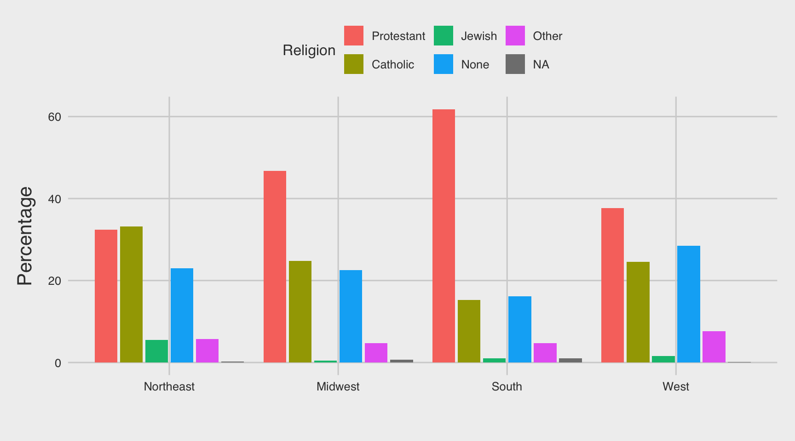
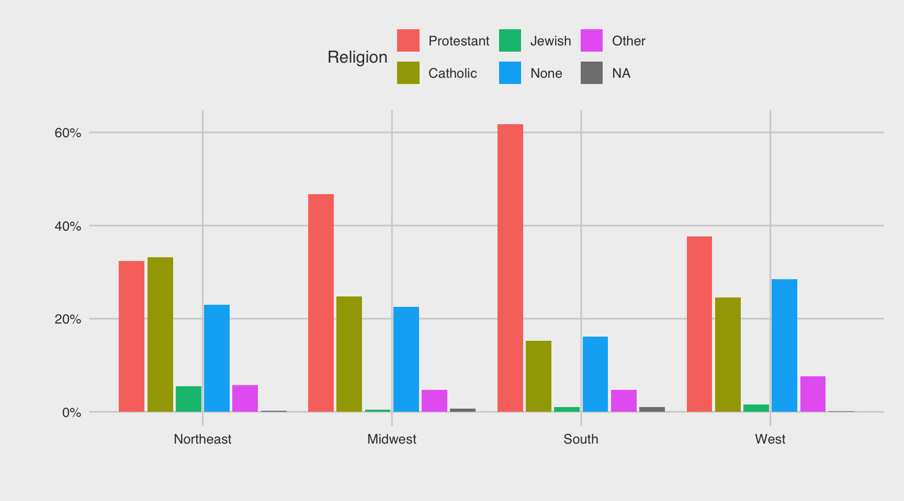
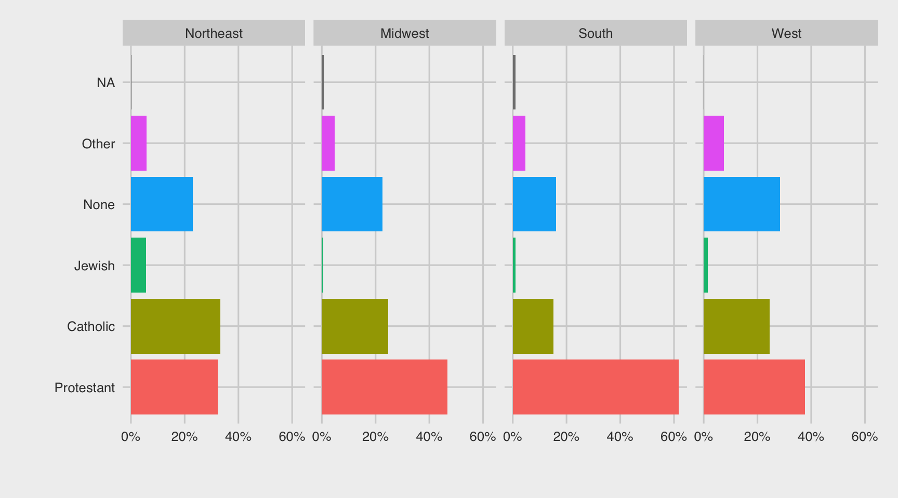
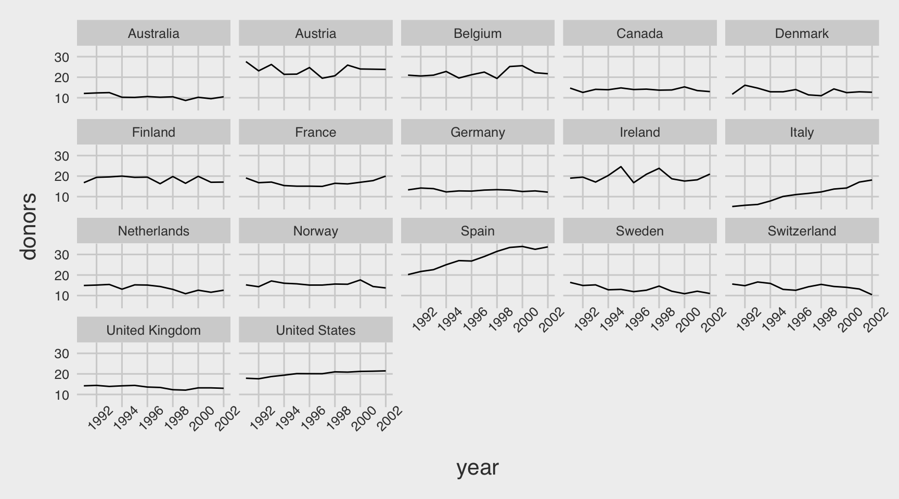
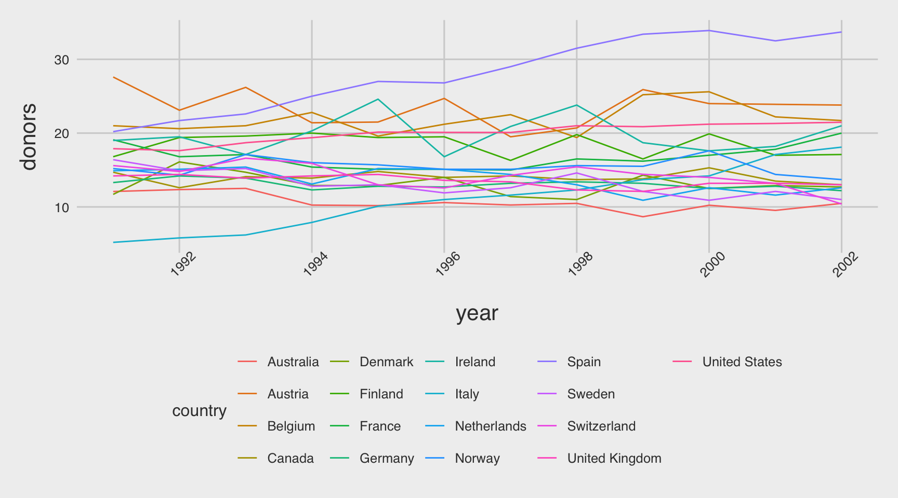
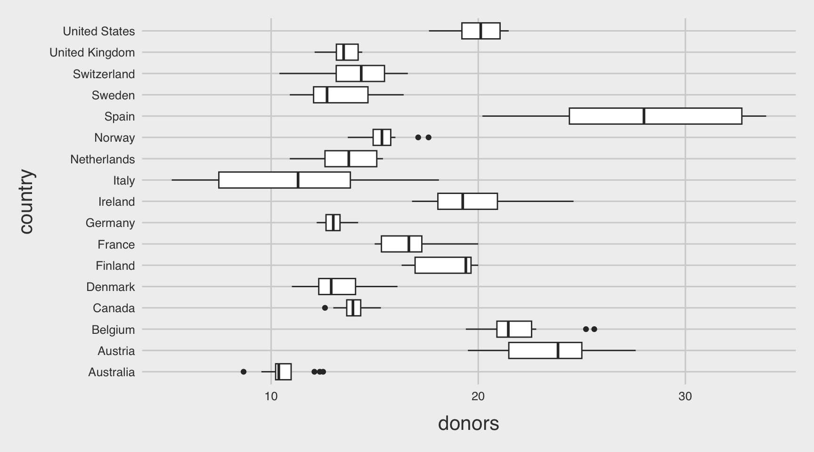
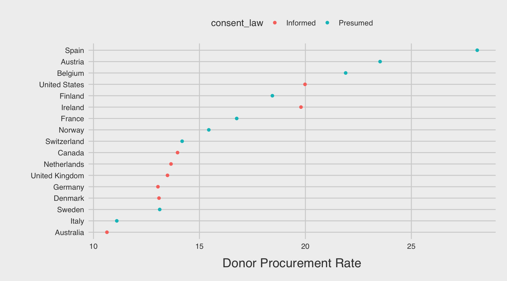
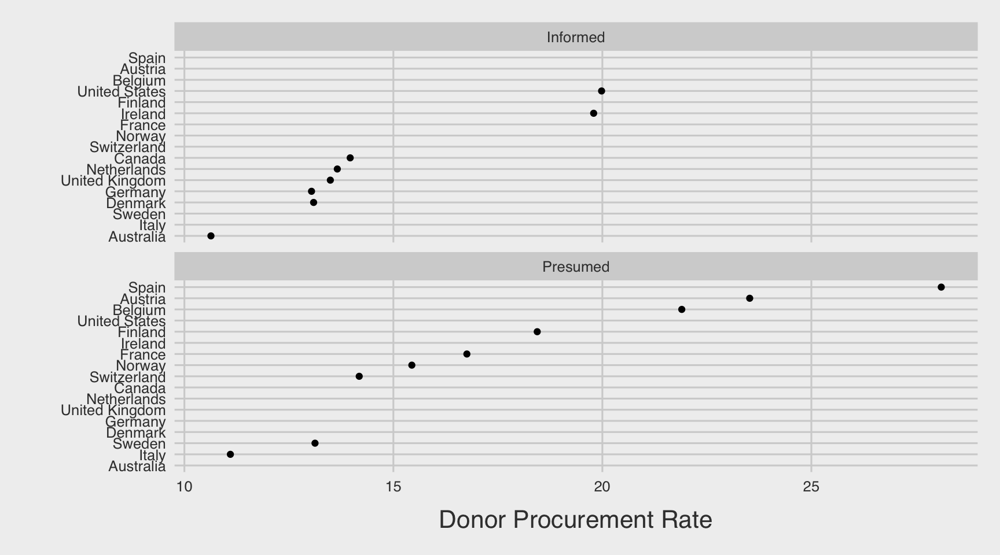

Code
gss_sm <- socviz::gss_smDANL 310: Introduction to Data Analytics
gss_sm <- socviz::gss_sm# n(): to count the number of observations for each group
bigregion_religion <- gss_sm |>
select(id, bigregion, religion) |>
arrange(bigregion, religion, id) |>
group_by(bigregion, religion) |>
summarize(n = n()) |>
mutate(tot = sum(n) ) |>
mutate(pct = 100 * n / tot)
bigregion_religion# A tibble: 24 × 5
# Groups: bigregion [4]
bigregion religion n tot pct
<fct> <fct> <int> <int> <dbl>
1 Northeast Protestant 158 488 32.4
2 Northeast Catholic 162 488 33.2
3 Northeast Jewish 27 488 5.53
4 Northeast None 112 488 23.0
5 Northeast Other 28 488 5.74
6 Northeast <NA> 1 488 0.205
7 Midwest Protestant 325 695 46.8
8 Midwest Catholic 172 695 24.7
9 Midwest Jewish 3 695 0.432
10 Midwest None 157 695 22.6
# ℹ 14 more rowsbigregion_religion |>
ggplot(aes(x = bigregion,
y = pct,
fill = religion)) +
geom_bar(stat = "identity",
position = "dodge2") + # geom_col()
labs(x = "",
y = "Percentage",
fill = "Religion") +
theme(legend.position = "top")
gss_sm |>
select(id, bigregion, religion) |>
arrange(bigregion, religion, id) |>
group_by(bigregion, religion) |>
summarize(n = n()) |>
mutate(tot = sum(n) ) |>
mutate(pct = n / tot) |>
ggplot(aes(x = bigregion,
y = pct,
fill = religion)) +
geom_bar(stat = "identity",
position = "dodge2") + # geom_col()
labs(x = "",
y = "",
fill = "Religion") +
scale_y_continuous(labels = scales::percent) +
theme(legend.position = "top")
bigregion_religion <- gss_sm |>
select(id, bigregion, religion) |>
arrange(bigregion, religion, id) |>
group_by(bigregion, religion) |>
summarize(n = n()) |>
mutate(tot = sum(n) ) |>
mutate(pct = n / tot)
bigregion_religion |>
ggplot(aes(x = pct,
y = religion,
fill = religion)) +
geom_col(show.legend = F) +
facet_wrap(~bigregion,
nrow = 1) +
scale_x_continuous(labels = scales::percent) +
labs(y = "", x = "")
organdata <- organdata
skimr::skim(organdata)| Name | organdata |
| Number of rows | 238 |
| Number of columns | 21 |
| _______________________ | |
| Column type frequency: | |
| character | 7 |
| Date | 1 |
| numeric | 13 |
| ________________________ | |
| Group variables | None |
Variable type: character
| skim_variable | n_missing | complete_rate | min | max | empty | n_unique | whitespace |
|---|---|---|---|---|---|---|---|
| country | 0 | 1.00 | 5 | 14 | 0 | 17 | 0 |
| world | 14 | 0.94 | 6 | 11 | 0 | 3 | 0 |
| opt | 28 | 0.88 | 2 | 3 | 0 | 2 | 0 |
| consent_law | 0 | 1.00 | 8 | 8 | 0 | 2 | 0 |
| consent_practice | 0 | 1.00 | 8 | 8 | 0 | 2 | 0 |
| consistent | 0 | 1.00 | 2 | 3 | 0 | 2 | 0 |
| ccode | 0 | 1.00 | 2 | 4 | 0 | 17 | 0 |
Variable type: Date
| skim_variable | n_missing | complete_rate | min | max | median | n_unique |
|---|---|---|---|---|---|---|
| year | 34 | 0.86 | 1991-01-01 | 2002-01-01 | 1996-07-02 | 12 |
Variable type: numeric
| skim_variable | n_missing | complete_rate | mean | sd | p0 | p25 | p50 | p75 | p100 | hist |
|---|---|---|---|---|---|---|---|---|---|---|
| donors | 34 | 0.86 | 16.48 | 5.11 | 5.20 | 13.00 | 15.10 | 19.60 | 33.90 | ▁▇▅▂▁ |
| pop | 17 | 0.93 | 39921.29 | 62219.22 | 3514.00 | 6938.00 | 15531.00 | 57301.00 | 288369.00 | ▇▁▁▁▁ |
| pop_dens | 17 | 0.93 | 12.00 | 11.09 | 0.22 | 1.94 | 9.49 | 19.11 | 38.89 | ▇▃▃▂▁ |
| gdp | 17 | 0.93 | 22986.18 | 4665.92 | 12917.00 | 19546.00 | 22756.00 | 26180.00 | 36554.00 | ▂▇▇▃▁ |
| gdp_lag | 0 | 1.00 | 22574.92 | 4790.71 | 11434.00 | 19034.25 | 22158.00 | 25886.50 | 36554.00 | ▂▇▇▃▁ |
| health | 0 | 1.00 | 2073.75 | 733.59 | 791.00 | 1581.00 | 1956.00 | 2407.50 | 5665.00 | ▆▇▂▁▁ |
| health_lag | 0 | 1.00 | 1972.99 | 699.24 | 727.00 | 1542.00 | 1850.50 | 2290.25 | 5267.00 | ▆▇▂▁▁ |
| pubhealth | 21 | 0.91 | 6.19 | 0.92 | 4.30 | 5.50 | 6.00 | 6.90 | 8.80 | ▂▇▅▃▁ |
| roads | 17 | 0.93 | 113.04 | 36.33 | 58.21 | 83.46 | 111.22 | 139.57 | 232.48 | ▇▇▆▂▁ |
| cerebvas | 17 | 0.93 | 610.80 | 144.45 | 300.00 | 500.00 | 604.00 | 698.00 | 957.00 | ▂▅▇▃▂ |
| assault | 17 | 0.93 | 16.53 | 17.33 | 4.00 | 9.00 | 11.00 | 16.00 | 103.00 | ▇▁▁▁▁ |
| external | 17 | 0.93 | 450.06 | 118.19 | 258.00 | 367.00 | 421.00 | 534.00 | 853.00 | ▆▇▅▁▁ |
| txp_pop | 17 | 0.93 | 0.72 | 0.20 | 0.22 | 0.63 | 0.71 | 0.83 | 1.12 | ▁▂▇▃▃ |
??organdatap <- ggplot(data = organdata,
mapping = aes(x = year, y = donors))
p +
geom_line(aes(group = country)) +
facet_wrap(~ country) +
theme(axis.text.x =
element_text(angle = 45))
# bad
p <- ggplot(data = organdata,
mapping = aes(x = year, y = donors))
p +
geom_line(aes(color = country)) +
theme(axis.text.x =
element_text(angle = 45))
organdata |>
ggplot(aes(x = donors,
y = country)) +
geom_boxplot()
skimr::skim(organdata)| Name | organdata |
| Number of rows | 238 |
| Number of columns | 21 |
| _______________________ | |
| Column type frequency: | |
| character | 7 |
| Date | 1 |
| numeric | 13 |
| ________________________ | |
| Group variables | None |
Variable type: character
| skim_variable | n_missing | complete_rate | min | max | empty | n_unique | whitespace |
|---|---|---|---|---|---|---|---|
| country | 0 | 1.00 | 5 | 14 | 0 | 17 | 0 |
| world | 14 | 0.94 | 6 | 11 | 0 | 3 | 0 |
| opt | 28 | 0.88 | 2 | 3 | 0 | 2 | 0 |
| consent_law | 0 | 1.00 | 8 | 8 | 0 | 2 | 0 |
| consent_practice | 0 | 1.00 | 8 | 8 | 0 | 2 | 0 |
| consistent | 0 | 1.00 | 2 | 3 | 0 | 2 | 0 |
| ccode | 0 | 1.00 | 2 | 4 | 0 | 17 | 0 |
Variable type: Date
| skim_variable | n_missing | complete_rate | min | max | median | n_unique |
|---|---|---|---|---|---|---|
| year | 34 | 0.86 | 1991-01-01 | 2002-01-01 | 1996-07-02 | 12 |
Variable type: numeric
| skim_variable | n_missing | complete_rate | mean | sd | p0 | p25 | p50 | p75 | p100 | hist |
|---|---|---|---|---|---|---|---|---|---|---|
| donors | 34 | 0.86 | 16.48 | 5.11 | 5.20 | 13.00 | 15.10 | 19.60 | 33.90 | ▁▇▅▂▁ |
| pop | 17 | 0.93 | 39921.29 | 62219.22 | 3514.00 | 6938.00 | 15531.00 | 57301.00 | 288369.00 | ▇▁▁▁▁ |
| pop_dens | 17 | 0.93 | 12.00 | 11.09 | 0.22 | 1.94 | 9.49 | 19.11 | 38.89 | ▇▃▃▂▁ |
| gdp | 17 | 0.93 | 22986.18 | 4665.92 | 12917.00 | 19546.00 | 22756.00 | 26180.00 | 36554.00 | ▂▇▇▃▁ |
| gdp_lag | 0 | 1.00 | 22574.92 | 4790.71 | 11434.00 | 19034.25 | 22158.00 | 25886.50 | 36554.00 | ▂▇▇▃▁ |
| health | 0 | 1.00 | 2073.75 | 733.59 | 791.00 | 1581.00 | 1956.00 | 2407.50 | 5665.00 | ▆▇▂▁▁ |
| health_lag | 0 | 1.00 | 1972.99 | 699.24 | 727.00 | 1542.00 | 1850.50 | 2290.25 | 5267.00 | ▆▇▂▁▁ |
| pubhealth | 21 | 0.91 | 6.19 | 0.92 | 4.30 | 5.50 | 6.00 | 6.90 | 8.80 | ▂▇▅▃▁ |
| roads | 17 | 0.93 | 113.04 | 36.33 | 58.21 | 83.46 | 111.22 | 139.57 | 232.48 | ▇▇▆▂▁ |
| cerebvas | 17 | 0.93 | 610.80 | 144.45 | 300.00 | 500.00 | 604.00 | 698.00 | 957.00 | ▂▅▇▃▂ |
| assault | 17 | 0.93 | 16.53 | 17.33 | 4.00 | 9.00 | 11.00 | 16.00 | 103.00 | ▇▁▁▁▁ |
| external | 17 | 0.93 | 450.06 | 118.19 | 258.00 | 367.00 | 421.00 | 534.00 | 853.00 | ▆▇▅▁▁ |
| txp_pop | 17 | 0.93 | 0.72 | 0.20 | 0.22 | 0.63 | 0.71 | 0.83 | 1.12 | ▁▂▇▃▃ |
organdata <- organdata |>
mutate(country = fct_reorder(country,
donors,
na.rm = T),
country_by_mean = fct_reorder(country,
donors,
mean,
na.rm = T),
)
levels(organdata$country) [1] "Australia" "Italy" "Sweden" "Denmark"
[5] "Germany" "United Kingdom" "Netherlands" "Canada"
[9] "Switzerland" "Norway" "France" "Ireland"
[13] "Finland" "United States" "Belgium" "Austria"
[17] "Spain" levels(organdata$country_by_mean) [1] "Australia" "Italy" "Germany" "Denmark"
[5] "Sweden" "United Kingdom" "Netherlands" "Canada"
[9] "Switzerland" "Norway" "France" "Finland"
[13] "Ireland" "United States" "Belgium" "Austria"
[17] "Spain" organdata_orig <- socviz::organdata
levels(factor(organdata_orig$country)) [1] "Australia" "Austria" "Belgium" "Canada"
[5] "Denmark" "Finland" "France" "Germany"
[9] "Ireland" "Italy" "Netherlands" "Norway"
[13] "Spain" "Sweden" "Switzerland" "United Kingdom"
[17] "United States" organdata |>
count(consent_law)# A tibble: 2 × 2
consent_law n
<chr> <int>
1 Informed 112
2 Presumed 126by_country <- organdata |>
group_by(consent_law, country) |>
summarize(donors_mean= mean(donors, na.rm = TRUE),
donors_sd = sd(donors, na.rm = TRUE),
gdp_mean = mean(gdp, na.rm = TRUE),
health_mean = mean(health, na.rm = TRUE),
roads_mean = mean(roads, na.rm = TRUE),
cerebvas_mean = mean(cerebvas, na.rm = TRUE))by_country2 <- organdata |>
group_by(consent_law, country) |>
summarize_if(is.numeric,
lst(mean, sd),
na.rm = TRUE) |>
ungroup()by_country2 |>
ggplot(aes(x = donors_mean,
y = country,
color = consent_law)) +
geom_point() +
labs(x = "Donor Procurement Rate",
y = "") +
theme(legend.position = "top")
by_country2 |>
ggplot(aes(x = donors_mean,
y = country)) +
geom_point() +
facet_wrap(~consent_law, ncol = 1) +
labs(x = "Donor Procurement Rate",
y = "") 